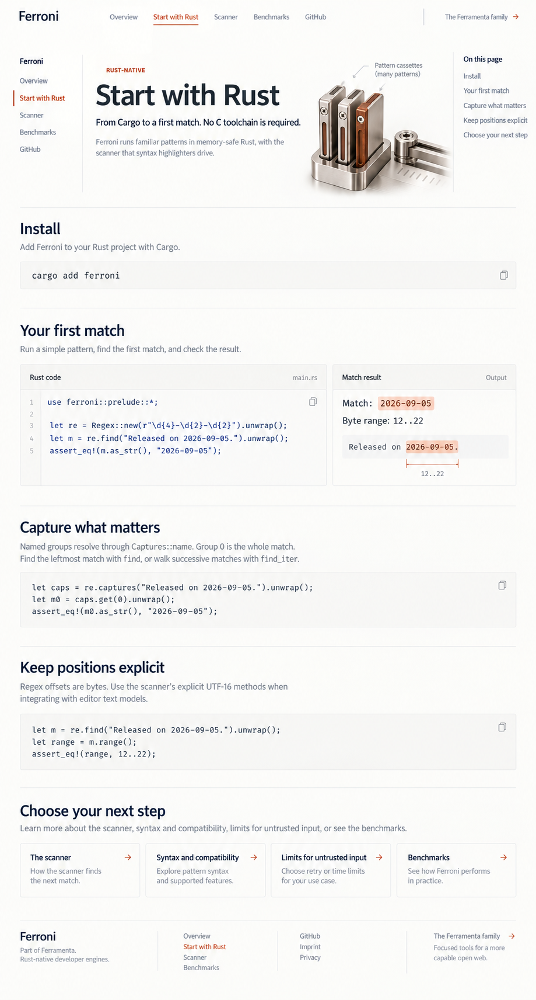

Eight core-page designs
Compare Ferromark: Start with Rust
Ferroni
Start with Rust
Overview
Start with Rust
The scanner
Benchmarks
Installation, a first real example, API choices and important input defaults.

Previous: Overview
Read source copy
Next: The scanner